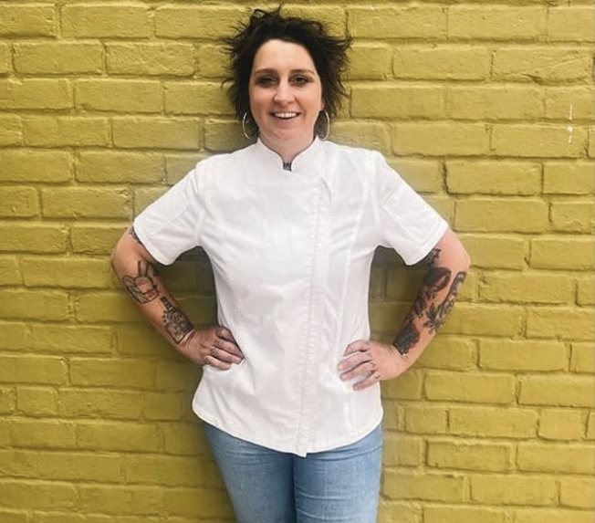
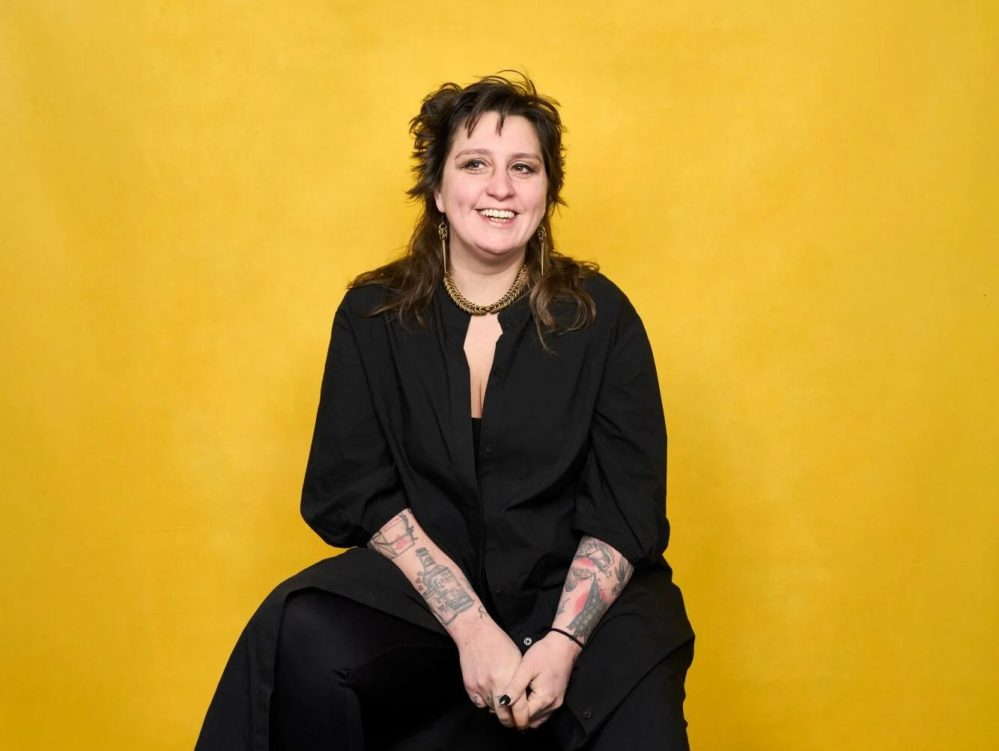
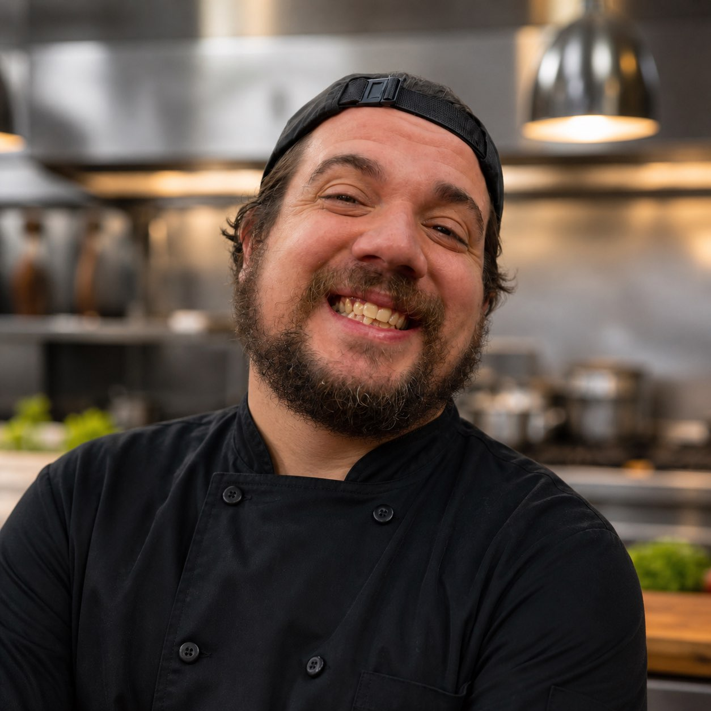

Private Tasting Dinners
Multi-course menus tailored to the guest and occasion.
Intimate, restaurant-caliber dining shaped by global influence and genuine hospitality.


Sam Nawrocki is a St. Louis-based chef whose work blends global influence, disciplined technique, and a deep belief that dining is about connection. As Executive Chef of Expat, she helped lead one of the city’s most ambitious culinary projects, bringing international flavors into an experience that felt both familiar and new.
Her approach to private dining reflects that same philosophy: thoughtful menus, calm hospitality, and food designed not only to impress, but to make people feel cared for.
Before the kitchen became her stage, Sam trained as a classical cellist. That foundation of practice, precision, and listening still shapes the way she cooks, teaches, and leads.
Sam’s approach to cooking is rooted in something simple: people come first.
Every menu is designed to feel both familiar and unexpected—grounded in comfort, elevated through technique, and shaped by global influence.
Just as important as the food is the experience around it. Each dinner is an opportunity to create something meaningful: a celebration, a gathering, a moment that guests will remember long after the last course.
Because at its best, dining isn’t just about what’s on the plate—it’s about how it makes you feel.
Multi-course menus tailored to the guest and occasion.
Elevated dining for birthdays, anniversaries, and gatherings.
Familiar foundations reimagined through international flavors.
Refined, social, chef-driven service.
Multi-day or weekend culinary experiences.
Thoughtful guidance for menus, kitchen culture, and hospitality standards.
“My every day is one of the best days of someone else’s life.”
Luke brings years of experience in the St. Louis culinary scene, with a deep understanding of both the kitchen and the guest experience. Equally comfortable behind the line or in the dining room, he helps ensure each event feels seamless, thoughtful, and personal from the first interaction to the final course.
